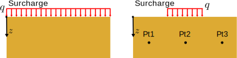
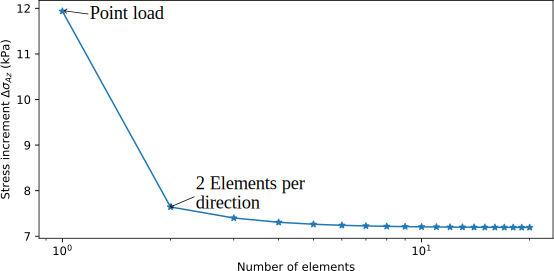
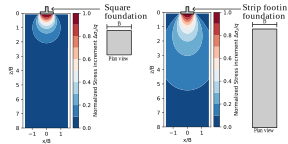

We learned how to set boundary conditions to resolve 2D/3D problems using numerical models.
We learned how to draw flow nets.
We learned how to use flow nets to calculate the total head, pressure head, pore pressure, and flow in a 2D seepage problem
We learned how to compute the factor of safety againts uplift.
We learned how to calculate the maximum and critical hydraulic gradient to asses internal erosion and piping.
Contents
Increment of stress due to an infinitely loaded area.
Increment of stress due to a point load (Boussinesq equation).
Use of charts and analytical solutions.
Use of numerical approximation.
Objectives covered in this lecture
[O3]: Develop an understanding of how to evaluate the stiffness/compressibility of soils and the role of seepage and permeability on time-dependent consolidation/settlement.
After this lecture we will able to:
Calculate the increment of stress produced by infinitely loaded soils.
Calculate the increment of stress for arbitrarily shaped areas.
Induced stresses
Is the increment of stress produced by an external load.
These stresses are absorbed either by the water as excess water pressure or by the soil skeleton as effective stresses.
With enough time, the soil skeleton will carry the generated stress.
Infinitely loaded area
When the external load extends considerably in both directions at the surface, it can be modeled as an infinitely loaded area.
The increment of stress for the idealized model is independent of position and depth.
\( \Delta \sigma (x,z)= q \)
Example 5.1
A landfill is designed to contain waste up to a height of 30 ft over a thick clay as shown in the figure. The landfill wide in comparison to the thickness of the soil layer. Calculate the increment of stress, and final total and effective vertical stresses at a depth of 5 ft.
What is the increment of stress when the applied load is finite?
In many cases, loads at the surface are not infinitely extended or uniformly distributed. Other models are needed.

What is the relationship between \(\Delta \sigma_1\), \(\Delta \sigma_2\), and \(\Delta \sigma_3\)?
Stress distribution due to a point load
Boussinesq's equation for the stress distribution in a elastic semi-infinite medium is:
The principle of superposition implies that the total induced stress of multiple loads is the addition of all individual induced stresses.
$$\Delta \sigma_z= \int_{A} I(x,y) q(x,y) dA$$
We can use a numerical approximation instead:
\( \Delta \sigma_z=\sum_{i=1}^n q_i A_i I_i\)
Example 5.2
A square footing of 2.5 m of width is placed at the surface of the soil as shown in in the figure. Structural analysis indicates that the footing will carry a load of 100 kN. Calculate the increment of stress at a depth of 2 m at the centerline and the mid edge of the footing. Use a discretization of two elements in each direction. How does solution compares with the point load solution?


Analytical and chart solutions
Analytical solutions are available for special cases. These solutions are also available in charts and tables.